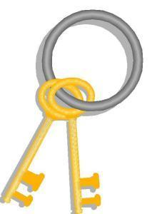

PGP Keysigning Party

When:
Saturday, February 26, 2011 - 19:00 - 20:00 Table of Contents
- Basics
- What is a keysigning party?
- What do I need?
- How do I prepare?
- What happens at the party?
- What happens after the party?
- FAQ
Basics
Where: SCALE 9x, Room TBA
When: February 26, 2011, Time TBA
What: SCALE PGP Keysigning Party
Making PGP keysigning EASIER
Last year we put a lot of work into making it easy for anyone to anyone to verify fingerprints at anytime, and it was huge success. This year, we've continue that by allowing two keys to be entered at registration time! Further, to avoid the problems we had last year, we've added some basic format checking of the fingerprints at registration time to prevent typos and copy-paste errors. We hope to continue to make this easier for everyone!
What is a keysigning party?
A keysigning party is a get-together with PGP users for the purpose of meeting other PGP users and signing each other's keys. This helps to extend the "web of trust" to a great degree. Also, it sometimes serves as a forum to discuss strong cryptography and related issues.
For more information the FAQ, see below.
What do I fill in the PGP part of the SCALE registration?
If you already have a key, then the details on what to fill in are listed below. If you do not yet have a key, please see the How do I prepare section.
All you need to fill in on the SCALE registration page is your fingerprint. This can be found in the output of the command gpg --fingerprint
youremail@domain.com and looks like 59F6 EF51 D60E 6B62 E5FB 9963 3795 E8C5 A1E7 32BB.
You also must ensure that your keys are available on the SKS Keyservers (of which MIT's keyservers are now part of). You can do this with gpg --keyserver x-hkp://pool.sks-keyservers.net --send-key keyid where keyid is your key ID.
For more details see the How do I prepare section or the FAQ.
What do I need for this party?
- Physical attendance
- Positive picture ID
- two piece of ID are recommended
- at least one should be government issued
- Your key ID, key type, HEX fingerprint, and key size from your PRIVATE key (how)
- A pen/pencil or whatever you'd like to write with....
How do I prepare?
Create a keypair
If you don't already have keys, follow these instructions, or read the gnupg man page, to create a keypair. If you have any problems, let me know.
Register with your fingerprint
When you fill in your fingerprint on the SCALE registration form you are automagically registered!
Print a copy of your fingerprint and bring it to the conference!
Run gpg -K --fingerprint <your email> and print the results. Keep this piece of paper secure! At the conference, verify that the fingerprint on your badge is correct. Now yo udon't have to carry anything additional around!
NEW: Sign anywhere!
Your fingerprint will be printed on back of your badge, and the front will have a PGP icon to show you are a PGP user. In addition, the PGP worksheets will be available starting at noon on the first day. This means that you can easily verify and be verified whenever it is convenient for you, even if you can't make the party!
What happens at the party?
Note that all of this will be explained at the party. But you may choose to familiarize yourself with the basic idea.
First, each person will get a piece of paper with the fingerprint of every key that was sent to me, and some checkboxes next to each one.
Then, each person will read off their fingerprint from their own personal copy of their fingerprint that they brough with them from their private key. As they do this, each person will verify that the fingerprint on the list they received is in fact valid.
We then get in a big "conga-line." This involves splitting into two equal lines, and having this lines face each other. You then verify the identity of the person in front of you. This should include seeingofficial identification. How much verification you need to state to the world you believe this person to be the name on their key is up to you. It's common to require two forms of ID at least one of which is picture ID and one of which is government ID.
Once everyone is ready, everyone shifts down one and repeats the process. This whole thing is repeated until everyone had verified everyone. Checkboxes will be provided next to each key on your list to make it easy to keep track of who you have verified.
That's it! Feel free to stick around afterwards and chat with people.
What happens after the party?
Note this will all be explained at the party as well. It's documented here for reference after the party.
After the party, you return to your workstation and sign and deliver keys. This is quite time-consuming, so set aside some time within a week of the party to do this.
I will send out a keyring with everyone's key to make things a bit easier for everyone. From here you must verify those keys, sign them, and verify email addresses.
Import the keyring
The keyring location will be specified here, after the party. Download it to a file. You can either import it into your keyring, or use it with --keyring <file>.
Verify the key...
For each key, verify the key you have is the same as the key on the paper you've verified: gpg --fingerprint <key ID>. Verify the full key ID.
Verifying the email address
In theory, there's a very complicated way to validate email by exchanging numbers and words, and exchanging them in various encrypted emails and such. It's complicated, and if you don't already know about, you probably don't want to do it.
Instead there's an easier (and reasonably secure) way to verify email addresses. However, it entails singing key first, so it's a bit counter-intuitive. The section on signing is below, so we're skipping that bit for the moment and going onto the verification.
Lets first look at the simple case where there's only one UID on a key (and thus one email address). We'll call the person John Doe and their email address will be
john.doe@example.com
. After you verify the fingerprint of the key you have and John's identity, you sign john's key, and export the signed key to a file. You then encrypt-email this to them.
You know that John owns that key, so only John can decrypt the message. Only the owner of the email address can (in theory) get that email. Thus only if John owns that email can he get the signature. This method is sufficient for the vast majority of even paranoid PGP users.
Note, however, that if someone has multiple UIDs on a key, this involves the following rather-annoying process:
- Export the unsigned key to a file for easier later re-import
- Sign one UID
- Export key with signed UID
- Delete key from keychain
- Re-import unsigned key
- Sign next UID
- Export key to another file
- Delete key from keychain
- Repeat for again, for each UID
- Encrypt-email each file to the appropriate email address
I have a utility called PIUS to make this somewhat easier. You should see the help or read the docs first, but you probably want something like pius -a -A -r </path/to/party/keyring.gpg> -s <your_keyid> - or, alternatively, if you want pius to handle the encrypt-email portion as well, then add -m <your_email>. There are also a variety of options to tell it how to find your mail server as well.
It's worth noting that PIUS is young, so if you find bugs, let me know.
Sign the key...
I recommend using PIUS - it can bring the time to sign 20 keys down from 2 hours to 10 minutes.
If you are not using PIUS, you can sign the key manually as follows gpg --ask-cert-level --sign-key <key ID>.
You will be asked what level you want to sign it at. Level 3 is if you have verified their fingerprint, ID, and email carefully enough that you feel confident stating publicly that you personally vouch for the fact that the person with the name in question owns the key and the email address in question. Level 2 is "casual checking" - perhaps they only had 1 form of ID, or they had 2 IDs that you didn't feel were up-to-snuff, or something else that makes you less than 100% sure. Level 1 is, in many opinions useless, as it says you have done no checking at all. Level 0 is, also useless, as it says you decline to answer (which would probably be better served by adding local trust to the trustdb instead of signing their key).
For every key you sign you will have to select a level and also type in the passphrase to your key (to unencrypt it so it can be used to sign the key in question).
FAQ
This party specific
- Can I bring/send more than one key?
Absolutely. - If you're going to be providing a list of fingerprints, doesn't that mean we have to trust you? Isn't that insecure?
It would, if we weren't going to verify them. However, it's convenient to have a easy checkbox list for everyone to use. So, at the beginning of the party, everyone will read their *own* copy of their fingerprint so that you (and everyone else) can verify those fingerprints on their individual piece of paper. - Is all this verification necessary
Yes. I've tried to explain the purpose at each step. The PGP links below should further clarify as well. - I didn't fill in a fingerprint on the registration form - can I still come?
Yes, but you must RSVP by sending a copy of your key (gpg --armor --export you@email.com) to scale9x-keysign AT ipom DOT com by February 22, 2011.
General
- Why is this party useful for me attend?
The party is useful to get a better web of trust. If everyone who has expressed interest actually shows up and signs keys, most people should be able to make it into the strong set. This provides good verification paths from you to package- and email- signers and encrypters all across the world. - Why is PGP useful to me?
Check out the Why use PGP? page at Phil's PGP site. - What if I still don't feel that's useful?
That's OK, you don't have to come. - Has this ever helped you?
Yes. And just as interesting, I've seen so many places were someone using this would have saved a lot of pain. - Why shouldn't I bring a computer?
See the key-signing howto answer - Where can I read more about PGP?
- Phil's PGP site
- PIUS
- The PGP Keysigning Party How-To
- The PGP pathfinder and key statistics site (strong-set analysis)
- PGP @ Wikipedia
- Gnu PG - Free cross-platform PGP
- MIT PGP Public Keyserver
- The Open PGP Alliance
- The Open PGP specification